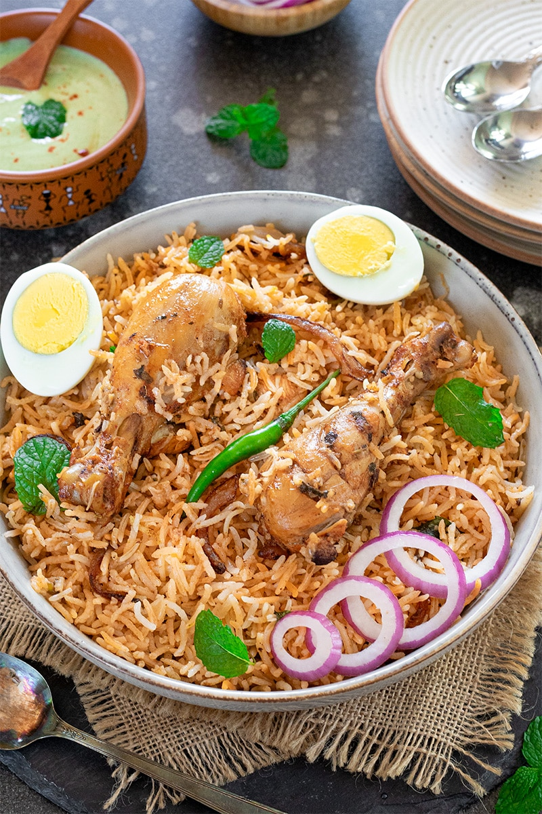

First, wash and soak the rice for about 20 minutes. Cook the rice separately until it is about 70% done. In another pot, heat oil and fry onions, garlic, and ginger. Add spices, vegetables or meat, and cook well. Then layer the partially cooked rice over the curry mixture. Cover and cook on low heat so the flavors blend together. This process is called “dum cooking.” Serve hot with salad or raita.
Back